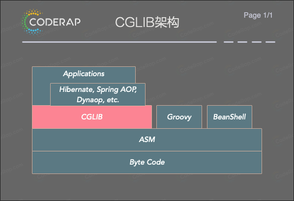
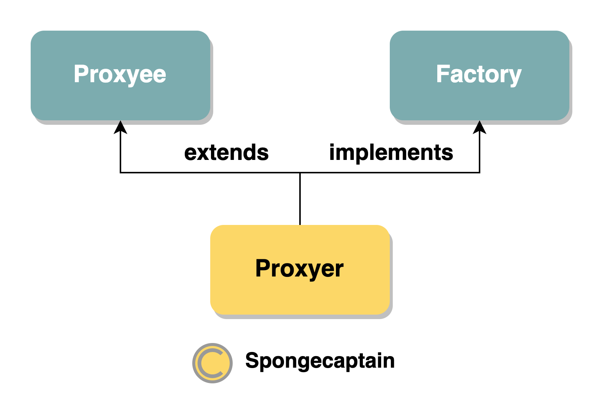
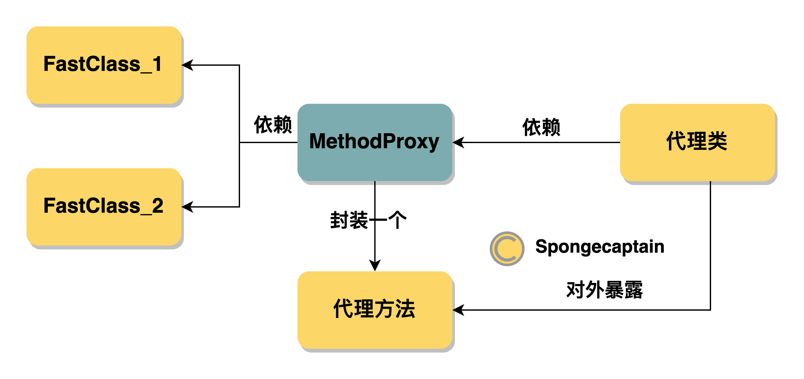

#CGLIB 动态代理的实际演练
JDK 动态代理技术最大的问题就在于其必须要求接口参与，即不是接口的方法无法进行动态代理。CGLIB 动态代理技术解决了这个问题，其在构造代理类过程中完全不需要接口的参与。
CGLIB 是什么？
CGLIB 是 Code Generation Library 的缩写，GitHub 官方项目 中提到：cglib is a powerful, high performance and quality Code Generation Library. It is used to extend JAVA classes and implements interfaces at runtime. See samples and API documentation to learn more about features.
关键词：运行时生成继承 Java 类以及实现了相关接口的代码；
CGLIB 用途广泛，特别是 AOP 领域，依赖于 CGLIB 的知名项目有：Spring、Guice、Hibernate、iBATIS。

在了解 CGLIB 原理之前，不妨先看看使用 CGLIB 的一个例子。
首先，由于 CGLIB 是第三方项目，因此需要引入依赖，这里以 Maven 为例：
1
2
3
4
5
|
<dependency>
<groupId>cglib</groupId>
<artifactId>cglib</artifactId>
<version>3.3.0</version>
</dependency>
|
然后创建被代理类代码：
1
2
3
4
5
6
7
8
9
10
11
12
|
public class Proxyee {
public String sayHello(String name){
System.out.println("hello "+ name);
return "hello "+ name;
}
public Integer year(int year){
System.out.println("This is " + year);
return year;
}
}
|
接着我们引入 CGLIB，实现动态代理机制以及测试类：
1
2
3
4
5
6
7
8
9
10
11
12
13
14
15
16
17
18
19
20
21
22
23
24
25
26
27
28
29
|
public class ProxyerUtil implements MethodInterceptor {
private static Enhancer enhancer = new Enhancer();
//此方法相当于 JDK 动态代理 InvocationHandler.invoke() 方法
public Object intercept(Object obj, Method method, Object[] args, MethodProxy proxy) throws Throwable {
System.out.println("--------Log.log()---------");
final Object o1 = proxy.invokeSuper(obj, args);
System.out.println("--------Log.log()---------");
return o1;
}
public Object newProxyInstance(Class<?> clazz) {
//设置产生的代理对象的父类，也就是被代理对象（被增强对象）
enhancer.setSuperclass(clazz);
//设置代理类的代理方法（代理方法作为回调封装在 MethodInterceptor 实例中）
enhancer.setCallback(this);
//使用默认无参数的构造函数创建目标对象
return enhancer.create();
}
}
class Test {
public static void main(String[] args) {
final ProxyerUtil proxyerUtil = new ProxyerUtil();
Proxyee proxyer = (Proxyee) proxyerUtil.newProxyInstance(Proxyee.class);
proxyer.sayHello("SpongeCaptain");
proxyer.year(2020);
}
}
|
控制台输出：
——–Log.log()———
hello SpongeCaptain
——–Log.log()———
——–Log.log()———
This is 2020
——–Log.log()———
MethodInterceptor 的 intercept() 方法有四个入口参数，依次为：
- Object obj (被)代理的对象，在 CGLIB 的语义中就是已经增强了的对象
- Method method 代理方法
- Object[] args 方法参数
- MethodProxy proxy 代理方法：如果代理方法有多个，那么就会对应多个不同的 MethodProxy 实例。
我们能注意到入口参数有两个参数都表示代理方法，它们实现的功能是类似的，但是 MethodProxy 通过非反射来实现方法的调用，效率更高一点。
MethodProxy 类有两个 invoke 方法，如下：
MethodProxy.invoke() 用于调用已经代理的方法；MethodProxy.invokeSuper() 用于调用被代理的方法；
另一方面，在 CGLIB 中没有被代理对象这一个说法。和 JDK 的动态代理作比较就是：
- JDK 动态代理中，我们首先构造被代理对象实例，然后注入 InvocationHandler 实例，然后将 InvocationHandler 实例交给
Proxy.newInstance() 方法来构造动态代理类实例。注入被代理对象是必要的，因此如果想在代理类中调用被代理类的方法，必须通过注入的被代理类对象来执行；
- CGLIB 动态代理中，我们并不需要构造被代理对象实例，我们只要给予其被代理类.class 即可。其内部的执行逻辑和 JDK 动态代理不一致。
正是因为这个原因，MethodInterceptor 的 intercept() 方法的第一个入口参数的语义就是 (被)代理的对象，在 CGLIB 的语义中就是已经增强了的对象，相当于 JDK 动态代理中的 InvocationHandler.invoke() 方法的第一个入口参数。
那么 CGLIB 内部的运行逻辑又是怎么样的呢？
首先可以画出我们在上面得到的代理类实例 Proxyee proxyer 的继承、实现、依赖关系图：

其中：
- Proxyee：为被代理类（被增强类）；
- Proxyer：为代理实例，从原本的类，即被代理类增强而来；
- Factory：为 net.sf.cglib.proxy.Factory 接口类，这个类是 CGLIB 中实现代理所必要实现的接口，用于提供一些工具方法，和 Proxyee 没有关系；
可见 CGLIB 版本的动态代理和 JDK 版本的动态代理有很大的区别，其完全不依赖于被代理类的实例，那么其是如何产生代理对象 proxyer 实例的呢？
CGLIB 是高效的代码生成包，底层依靠 ASM（开源的 java 字节码编辑类库）操作字节码实现。也就是说，CGLIB 的做法是对 Proxyee 类的字节码直接进行修改增强得到代理类 Proxyer，而不是通过生成引用了 Proxyee 实例的 Proxyer 类的字节码，然后再利用字节码生成 Proxyer 实例。
在开启 CGLIB 的 debug 模式后，能够得到 CGLIB 动态生成的字节码文件，开启方式很简单，在 main 方法中主动调用：
1
2
|
String location = ProxyerUtil.class.getResource("").getPath() + "debugging/";
System.setProperty(DebuggingClassWriter.DEBUG_LOCATION_PROPERTY, location);
|
在开启 DEBUG 模式后运行代码，会在 target/cglibproxy/debugging/cglibproxy/ 目录下生成三个 .class 字节码文件，它们分别是：
Proxyee$$EnhancerByCGLIB$$551d55b3$$FastClassByCGLIB$$dece6ddd.classProxyee$$EnhancerByCGLIB$$551d55b3.classProxyee$$FastClassByCGLIB$$dbd539ed.class
其中只有一个类为 Proxyee 的子类：Proxyee$$EnhancerByCGLIB$$551d55b3 其他两个类都是 FastClass 的子类。
首先我们来看 Proxyee 的子类，因为只有它具有代理方法。
1
2
3
4
5
6
7
8
9
10
11
12
13
14
15
16
17
18
19
20
21
22
23
24
25
26
|
//省略其他逻辑，仅仅看代理方法
public final String sayHello(String var1) {
MethodInterceptor var10000 = this.CGLIB$CALLBACK_0;
if (var10000 == null) {
CGLIB$BIND_CALLBACKS(this);
var10000 = this.CGLIB$CALLBACK_0;
}
//this 类型：Proxyee 与 Factory 的子类
//CGLIB$sayHello$0$Method 类型：Method 类型，从名字就可以看出指向的是 Proxyee.sayHello() 方法
//new Object[]{var1}：显然是方法的入口参数
//CGLIB$sayHello$0$Proxy 类型：MethodProxy 类型
//var10000 类型：MethodInterceptor 类型
return var10000 != null ? (String)var10000.intercept(
this, CGLIB$sayHello$0$Method, new Object[]{var1}, CGLIB$sayHello$0$Proxy)： super.sayHello(var1);
}
public final Integer year(int var1) {
MethodInterceptor var10000 = this.CGLIB$CALLBACK_0;
if (var10000 == null) {
CGLIB$BIND_CALLBACKS(this);
var10000 = this.CGLIB$CALLBACK_0;
}
return var10000 != null ? (Integer)var10000.intercept(this, CGLIB$year$1$Method, new Object[]{new Integer(var1)}, CGLIB$year$1$Proxy) : super.year(var1);
}
|
那么问题来了，为什么还 CGLIB 还生成另外两个继承于 FastClass 的匿名内部类呢？
这是因为 FastClass 能更快地提供非反射的方法调用，正如之前所说的 MethodProxy 实例就基于 FastClass 进行非反射的代理方法调用，而 Method 实例则是通过反射机制进行方法调用的。
在介绍 MethodInterceptor.intercept() 方法的入口参数时有提到这一点。
MethodProxy 实例为什么会和 FastClass 类有关系？
下面是 MethodProxy.init() 方法，就是用于初始化这层关系，如下所示：
1
2
3
4
5
6
7
8
9
10
11
12
13
14
15
16
17
18
19
20
21
|
private void init()
{
if (fastClassInfo == null)
{
synchronized (initLock)
{
if (fastClassInfo == null)
{
CreateInfo ci = createInfo;
//初始化索引和方法签名以及建立两者的关系（延迟初始化）
FastClassInfo fci = new FastClassInfo();
fci.f1 = helper(ci, ci.c1);
fci.f2 = helper(ci, ci.c2);
fci.i1 = fci.f1.getIndex(sig1);//重写版代理方法
fci.i2 = fci.f2.getIndex(sig2);//未重写版代理方法
fastClassInfo = fci;
createInfo = null;
}
}
}
}
|
为什么会有两个索引？
因为 CGLIB 通过继承实现动态代理时，使其会保留两个父类的方法版本：
- 一个是方法重写增强版本，即动态代理方法；
- 另一个是不经过拦截器的对应方法，即原方法，或者说被代理的方法；
注意事项：每一个 MethodProxy 实例都是延迟加载的，比如这里调用 Proxy.sayHello("SpongeCaptain",2020) 方法时才会真正地初始化 MethodProxy 实例，这时才调用其 init() 方法。
这两个索引分别对应着自己的 FastClass 实例，因此正如上面提到的 CGLIB 额外产生了两个 FastClass 类实例。
通过 Proxyer 来初始化索引乃至执行代理方法的完成过程如下所示：
- 调用
Proxyer.sayHello("hello", 2020) 中有使用 MethodProxy 的相关方法（下面会有讲到），导致此代理方法对应的 MethodProxy 实例开始初始化；
- 在
MethodProxy.init() 方法的执行过程中，通过方法签名 Signature 实例（此时值为 sayHello(Ljava/lang/String;)Ljava/lang/String;）调用 FastClass.getIndex() 方法得到方法对应的索引；
- 通过
MethdProxy.invoke() 方法待 init() 执行完毕后，通过调用 FastClas.invoke() 方法进行真正的方法调用，其中入口参数依次为：方法对应的索引、(被)代理对象、方法入口参数；
下面是 MethodProxy 实例分别调用重写方法的 invoke() 以及调用非重写方法的 invokeSuper()：
1
2
3
4
5
6
7
8
9
10
11
12
13
14
15
16
17
18
19
20
21
22
23
24
25
26
27
28
29
30
31
32
33
34
35
36
37
|
//MethodProxy.invoke() 以及 MethodProxy.invokeSuper() 方法
//重写版本的方法调用，可以看到我们使用的是索引 fci.i1
//Object object 为(被)代理的对象，在 CGLIB 的语义中就是已经增强了的对象
//Object[] args 代理方法的输入参数
public Object invoke(Object obj, Object[] args) throws Throwable {
try {
init();//延迟加载措施
FastClassInfo fci = fastClassInfo;
return fci.f1.invoke(fci.i1, obj, args);//调用 FastClass.invoke() 方法
} catch (InvocationTargetException e) {
throw e.getTargetException();
} catch (IllegalArgumentException e) {
if (fastClassInfo.i1 < 0)
throw new IllegalArgumentException("Protected method: " + sig1);
throw e;
}
}
//未重写版本的方法调用，可以看到我们使用的是索引 fci.i2
public Object invokeSuper(Object obj, Object[] args) throws Throwable {
try {
init();//延迟加载措施
FastClassInfo fci = fastClassInfo;
return fci.f2.invoke(fci.i2, obj, args);//调用 FastClass.invoke() 方法
} catch (InvocationTargetException e) {
throw e.getTargetException();
}
}
//补充：fci 字段指向 FastClassInfo 实例，定义如下
private static class FastClassInfo
{
FastClass f1;
FastClass f2;
int i1;
int i2;
}
|
下面为 FastClass 的匿名内部类（以重写方法的 FastClass 版本为例）：
1
2
3
4
5
6
7
8
9
10
11
12
13
14
15
16
17
18
19
20
21
22
23
24
25
26
27
28
29
30
31
32
33
34
35
36
37
38
39
|
//通过 FastClss.getIndex() 方法完成方法签名到方法索引的映射
public int getIndex(Signature var1) {
String var10000 = var1.toString();
switch(var10000.hashCode()) {
case -2055565910:
if (var10000.equals("CGLIB$SET_THREAD_CALLBACKS([Lnet/sf/cglib/proxy/Callback;)V")) {
return 20;
}
break;
case -1816210712:
if (var10000.equals("sayHello(Ljava/lang/String;)Ljava/lang/String;")) {
return 0;
}
break;
//省去其他 case 语句(因为太多了)
}
}
//通过 FastClass.invoke() 方法来执行具体的代理方法
//参数说明：int var1 对应于方法索引， Object var2 为(被)代理对象，Object[] var3 为代理方法入口参数
public Object invoke(int var1, Object var2, Object[] var3) throws InvocationTargetException {
551d55b3 var10000 = (551d55b3)var2;
int var10001 = var1;
try {
switch(var10001) {
case 0:
return var10000.sayHello((String)var3[0]);
case 1:
return var10000.year(((Number)var3[0]).intValue());
case 2:
return 551d55b3.CGLIB$findMethodProxy((Signature)var3[0]);
case 3:
var10000.setCallback(((Number)var3[0]).intValue(), (Callback)var3[1]);
return null;
//省去其他 case 语句
}
}
}
|
画外音：这么多的 swith-case 太影响美观和阅读了，不过匿名内部类反正是给机器看的，也就无所谓了。
对于 Java 的 Method 而言，方法签名就是方法所属类的完全限定名+方法名+入口参数类型。然而通过方法名来确定到具体的方法指针最后在执行没有直接通过方法指针来执行快。但是问题在于 Java 语法中没有指针，更别提方法指针，因此 FastClass 采用了巧妙的方式，利用索引和方法签名，这里的方法签名通过 switch case 语句实现。这里我们不妨就拿 Proxyee$$EnhancerByCGLIB$$551d55b3$$FastClassByCGLIB$$dece6ddd 类为例。
现在我们可以知道执行一个由 CGLIB 产生的代理类的内部执行逻辑了，如下图所示：

其中每一个 FastClass 负责提供 getIndex() 将方法签名转换为索引，通过 invoke() 方法提供通过方法索引来执行具体的代理方法的能力。而两个 FastClass 又分别负责未重写的代理方法与重写了的代理方法。
注意事项：生成代理类的类名规范为：被代理类名 + "$$" + Class Generator Name + "ByCGLIB" + "$$" + key的hashCode 规则。这一点在我们 GitHub 项目上也能看到。
那么最后一个问题，这三个 .class 匿名内部类是如何生成的？
这里主要考虑的是代理类实例如何生成，因为这里的代理类生成逻辑和 JDK 不同，其对外的表现是继承了被代理类，这是理解 CGLIB 的重点。
这要从 Enhancer.create() 方法入手，除去安全检查逻辑、缓存逻辑、工厂逻辑、创建 CGLIB 框架组件类的相关逻辑，
1
2
3
4
5
6
|
//DefaultGeneratorStrategy.generate()
public byte[] generate(ClassGenerator cg) throws Exception {
DebuggingClassWriter cw = getClassVisitor();//得到来自 ASM 框架下的 ClassWriter 实例
transform(cg).generateClass(cw);//初始化 Enhandler 实例的相关字段，与类的字节码相关
return transform(cw.toByteArray());//以 byte 数组的形式返回字节码文件内容
}
|
那么最终和代理类直接相关的方法是 Enhancer.generateClass()，如下：
1
2
3
4
5
6
7
8
9
10
11
12
13
14
15
16
17
18
19
20
21
22
23
24
25
26
27
28
29
30
31
32
33
34
35
36
37
38
39
40
41
42
43
44
45
46
47
48
49
50
51
52
53
54
55
56
57
58
59
60
61
62
63
64
65
66
67
68
69
70
71
72
73
74
75
76
77
78
79
80
81
82
83
84
85
86
87
88
89
90
91
92
93
94
95
96
97
98
99
100
101
102
103
104
105
106
107
108
109
110
111
112
|
// Enhancer 是有状态的，因此一个 Enhancer 实例只能生产一个代理类
// 所以 Enhancer.generateClass() 直接是在修改字段值了
public void generateClass(ClassVisitor v) throws Exception {
Class sc = (superclass == null) ? Object.class : superclass;
//如果被代理类是final类型的，抛出异常
if (TypeUtils.isFinal(sc.getModifiers()))
throw new IllegalArgumentException("Cannot subclass final class " + sc.getName());
//以下两行代码获得被代理类的非私有构造函数
List constructors = new ArrayList(Arrays.asList(sc.getDeclaredConstructors()));
filterConstructors(sc, constructors);
// Order is very important: must add superclass, then
// its superclass chain, then each interface and
// its superinterfaces.
List actualMethods = new ArrayList();
List interfaceMethods = new ArrayList();
final Set forcePublic = new HashSet();
//得到被代理类及其父类、接口的非final、非static、非private方法。这些方法是需要代理的（在不考虑CallbackFilter的情况下）
getMethods(sc, interfaces, actualMethods, interfaceMethods, forcePublic);
//获得需要代理的方法的方法信息
List methods = CollectionUtils.transform(actualMethods, new Transformer() {
public Object transform(Object value) {
Method method = (Method)value;
int modifiers = Constants.ACC_FINAL
| (method.getModifiers()
& ~Constants.ACC_ABSTRACT
& ~Constants.ACC_NATIVE
& ~Constants.ACC_SYNCHRONIZED);
if (forcePublic.contains(MethodWrapper.create(method))) {
modifiers = (modifiers & ~Constants.ACC_PROTECTED) | Constants.ACC_PUBLIC;
}
return ReflectUtils.getMethodInfo(method, modifiers);
}
});
ClassEmitter e = new ClassEmitter(v);
if (currentData == null) {
//生成class文件的版本号、类的访问描述符、类名、父类名、接口，并生成SourceFile属性
e.begin_class(Constants.V1_2,
Constants.ACC_PUBLIC,
getClassName(),
Type.getType(sc),
(useFactory ?
TypeUtils.add(TypeUtils.getTypes(interfaces), FACTORY) :
TypeUtils.getTypes(interfaces)),
Constants.SOURCE_FILE);
} else {
e.begin_class(Constants.V1_2,
Constants.ACC_PUBLIC,
getClassName(),
null,
new Type[]{FACTORY},
Constants.SOURCE_FILE);
}
List constructorInfo = CollectionUtils.transform(constructors, MethodInfoTransformer.getInstance());
//以下生成代理类的字段，可以对照下面的反编译结果观看
//生成private boolean CGLIB$BOUND字段
e.declare_field(Constants.ACC_PRIVATE, BOUND_FIELD, Type.BOOLEAN_TYPE, null);
//生成public static Object CGLIB$FACTORY_DATA字段
e.declare_field(Constants.ACC_PUBLIC | Constants.ACC_STATIC, FACTORY_DATA_FIELD, OBJECT_TYPE, null);
if (!interceptDuringConstruction) {
e.declare_field(Constants.ACC_PRIVATE, CONSTRUCTED_FIELD, Type.BOOLEAN_TYPE, null);
}
//生成private static final ThreadLocal CGLIB$THREAD_CALLBACKS字段
e.declare_field(Constants.PRIVATE_FINAL_STATIC, THREAD_CALLBACKS_FIELD, THREAD_LOCAL, null);
//生成private static final Callback[] CGLIB$STATIC_CALLBACKS字段
e.declare_field(Constants.PRIVATE_FINAL_STATIC, STATIC_CALLBACKS_FIELD, CALLBACK_ARRAY, null);
if (serialVersionUID != null) {
e.declare_field(Constants.PRIVATE_FINAL_STATIC, Constants.SUID_FIELD_NAME, Type.LONG_TYPE, serialVersionUID);
}
//以下是生成Callback字段，可以看到，对应每个设置的Callback，都会在代理类中生成一个对应具体类型的字段
for (int i = 0; i < callbackTypes.length; i++) {
//在本例中生成的是private MethodInterceptor CGLIB$CALLBACK_0字段，后缀_0代表是在Enhancer中设置的第0个Callback
e.declare_field(Constants.ACC_PRIVATE, getCallbackField(i), callbackTypes[i], null);
}
// This is declared private to avoid "public field" pollution
//生成private static Object CGLIB$CALLBACK_FILTER字段。如果Enhancer只设置了一个Callback并且没有设置CallbackFilter，那么会默认对该Enhancer对象添加一个指向第0个Callback的CallbackFilter
e.declare_field(Constants.ACC_PRIVATE | Constants.ACC_STATIC, CALLBACK_FILTER_FIELD, OBJECT_TYPE, null);
if (currentData == null) {
//这个函数生成需要代理类的方法
emitMethods(e, methods, actualMethods);
//生成构造器
emitConstructors(e, constructorInfo);
} else {
emitDefaultConstructor(e);
}
//以下三行代码分别生成代理类的CGLIB$SET_THREAD_CALLBACKS、CGLIB$SET_STATIC_CALLBACKS和CGLIB$BIND_CALLBACKS函数
emitSetThreadCallbacks(e);
// 绑定静态callback
emitSetStaticCallbacks(e);
// 绑定callback
emitBindCallbacks(e);
if (useFactory || currentData != null) {
int[] keys = getCallbackKeys();
//如果useFactory为true就会生成几个newInstance方法，还有几个操作代理类的Callback的方法
emitNewInstanceCallbacks(e);
emitNewInstanceCallback(e);
emitNewInstanceMultiarg(e, constructorInfo);
emitGetCallback(e, keys);
emitSetCallback(e, keys);
emitGetCallbacks(e);
emitSetCallbacks(e);
}
e.end_class();
}
|
可见，DebuggingClassWriter 它通过封装 ClassWriter，实现了从定义的类结构到字节码 byte[] 数组的转换工作，并且如果在 CGLIB DEBUG 模式下，还会将将字节码内容写入我们前面指定的目录中，便于调试。
这里使用了 ASM 提供的 API，细节并不是非常重要，但是了解 ASM 的相关 API 有助于我们理解 CGLIB：
- ClassRead：用于读取加载 .class 文件；
- ClassVistor：用于修改 .class 文件；
- ClassWriter：用于生产 .class 文件；
这里的文件是内存中的 .class 文件对应的 byte[] 数组。上述过程就用到了上述三个类。
ASM 的大致机理则是先读取原来的 .class 文件，然后加入新特性后，在其 toByteArray() 方法中按照虚拟机规范即 ClassFile 的格式依次填入数据，最终返回新 .class 文件，即 byte[] 数组。
如果想要详细裂解 ASM 机制，可以看：Java 字节码处理框架 ASM 设计思想解析。
接着，在获取了生成的字节码文件的 byte[] 数组后，会通过 ReflectUtils.defineClass(className, b, loader) 使用反射得到相应的实例，源码如下：
1
2
3
4
5
6
7
8
9
10
11
12
|
//AbstractClassGenerator.generate(ClassLoaderData data) 方法内部
byte[] b = strategy.generate(this);
String className = ClassNameReader.getClassName(new ClassReader(b));
ProtectionDomain protectionDomain = getProtectionDomain();
synchronized (classLoader) { // just in case
//根据返回的字节码生成类
if (protectionDomain == null) {
gen = ReflectUtils.defineClass(className, b, classLoader);
} else {
gen = ReflectUtils.defineClass(className, b, classLoader, protectionDomain);
}
}
|
其中 ReflectUtils.defineClass(String className, byte[] b, ClassLoader loader) 的原理其实是通过反射调用 ClassLoader 的 defineClass() 方法来创建类的：
1
2
3
4
5
6
7
|
public static Class defineClass(String className, byte[] b, ClassLoader loader) throws Exception {
Object[] args = new Object[]{className, b, new Integer(0), new Integer(b.length), PROTECTION_DOMAIN };
Class c = (Class)DEFINE_CLASS.invoke(loader, args);
// Force static initializers to run.
Class.forName(className, true, loader);
return c;
}
|
最终得到 Class 类对象之后，会使用 firstInstance(gen) 将 Class 对象传入，创建对应的实例，此处使用的 firstInstance(Class) 来自于 Generator 类：
1
2
3
4
5
6
7
8
9
10
11
12
13
14
15
16
17
18
19
20
21
22
23
24
25
26
27
28
29
30
31
32
33
34
|
// Generator类的firstInstance(Class)，调用了ReflectUtils类的newInstance(Class)方法
protected Object firstInstance(Class type) {
return ReflectUtils.newInstance(type);
}
// ReflectUtils类newInstance(Class)的相关方法
public static Object newInstance(Class type) {
return newInstance(type, Constants.EMPTY_CLASS_ARRAY, null);
}
public static Object newInstance(Class type, Class[] parameterTypes, Object[] args) {
return newInstance(getConstructor(type, parameterTypes), args);
}
public static Object newInstance(final Constructor cstruct, final Object[] args) {
boolean flag = cstruct.isAccessible();
try {
// 设置构造方法的可见性
cstruct.setAccessible(true);
// 根据构造方法创建对象
Object result = cstruct.newInstance(args);
return result;
} catch (InstantiationException e) {
throw new CodeGenerationException(e);
} catch (IllegalAccessException e) {
throw new CodeGenerationException(e);
} catch (InvocationTargetException e) {
throw new CodeGenerationException(e.getTargetException());
} finally {
cstruct.setAccessible(flag);
}
}
|
整个过程为：
- 将被代理类的 .class 文件传给 ASM 的 ClassRead 类；
- 然后利用 ClassVistor 添加 AOP 拦截方法（我们写在 MethodInterceptor 类的 intercept() 方法）；
- 接着利用 ClassWriter 将方法增强后的代理类生产 byte[] 字节码；
- 然后调用 ReflectUtils 的
defineClass() 方法来定义代理类；
- 最后调用 ReflectUtils 的
newInstance() 方法来构造匿名的代理类；
省略其他逻辑，比如 CGLIB 的缓存机制。
代码分析引用于：coderap，详细的源代码分析可以访问此网站。
做一个 JDK 动态代理和 CGLIB 动态代理的区别：
-
实现逻辑上的区别：
- JDK：对基于接口静态代理的改进，即动态生成接口类；
- CGLIB：对静态继承的改进，即动态生产继承类；
-
实现机理上的区别：
- JDK：利用被代理类的实例、接口 interfaces 数组动态构造代理类的字节码数组，然后利用字节码构造代理类；
- CGLIB：使用 ASM 框架直接对字节码进行修改，其代理类实例内部没有封装一个被代理类实例，而是选择将被代理类实例和代理类实例合二为一。
-
效率上：
-
兼容性上：
- JDK 要求类必须实现接口，兼容性差一些；
- CGLIB 不要求类必须实现接口，实现与否能够进行动态代理，兼容性好一些；
注意事项：正是因为 CGLIB 基于继承语法以及动态修改字节码实现，因此要求被代理类中方法一定能够被继承，换言之，final 方法不能被代理，final 类也不能被代理。